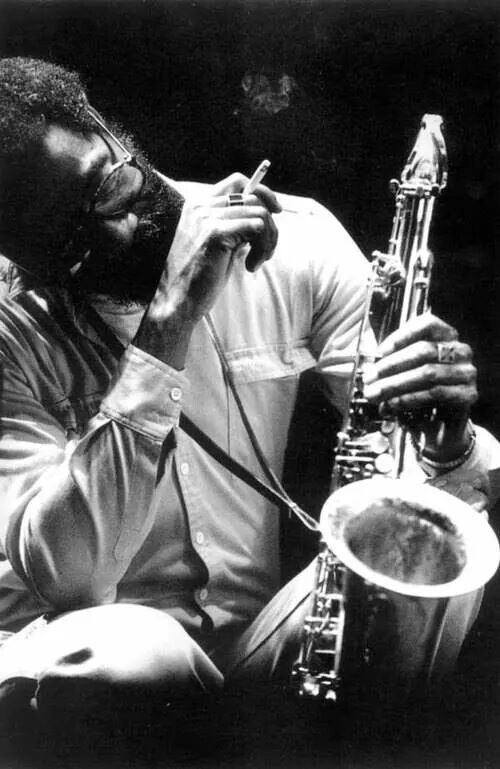

VIDEOS
BEYOND THE SOUND.
01 / VIDEO COLLECTION JAZZ IN MOTION.
From the stage to the studio, discover the moments that bring jazz to life. Witness the artistry, the energy and the stories behind the music.

BEYOND THE SOUND.
From the stage to the studio, discover the moments that bring jazz to life. Witness the artistry, the energy and the stories behind the music.